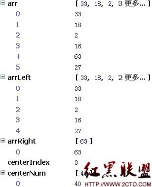
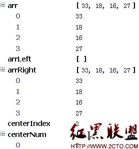

这里我总结的一点是在使用递归时：
1.必需要有一个判断，并且返回一个值；不然就是一个死循环了；
2.在内部调用自己的时候，传的参数是内部定义的某个变量，这个变量和初次传时来的参数，有关联；
3.要执行同样的工作，可以考虑用递归；
这是第一次执行函数的变量情况：中间数是40；根据循环里的判断条件小于40的存放在arrLeft，大于40的存放在arrRight里面。如下图
第二次调用函数
,当执行到 return quickSort(arrLeft).concat(centerNum,quickSort(arrRight));
quickSort(arrLeft)会去调用函数，传的参数是[33,18,2,16,27]
中间数是2，比2小的放左边arrLeft，比2大的放右边arrRight
最后再去调用quickSort(arrRight)
后面一样循环调用自己，直到传入的参数长度，小于1，就返回这个传入的参数。
快速排序参考网站